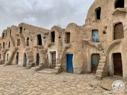

Ksar Médenine
Au cœur de la ville, ce ksar impressionnant avec ses 6 cours et plus de 400 ghorfas (greniers) sur plusieurs étages est le symbole de Médenine. Construit entre le XVIe et XIXe siècle, il servait de grenier fortifié collectif et de lieu de commerce pour les tribus berbères.